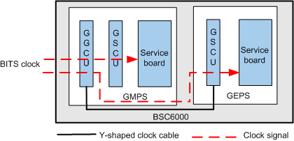
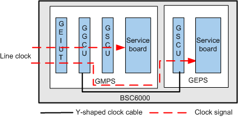
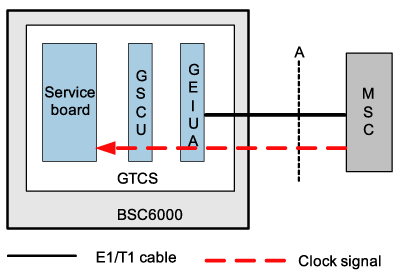

This describes the clock synchronization in the GMPS/GEPS and GTCS in BM/TC separated configuration mode.
Clock Synchronization in the GMPS/GEPS
The clock signals in the GMPS/GEPS are provided by the GGCU. The GGCU either extracts BITS clock signals from the BITS clock equipment or extracts line clock signals from the Ater interface.
- Figure 1 shows the clock synchronization in the GMPS/GEPS when the GGCU extracts BITS clock signals from the BITS clock equipment.
- Figure 2 shows the clock synchronization in the GMPS/GEPS when the GGCU extracts line clock signals from the Ater interface.
Figure 1 Clock synchronization in the GMPS/GEPS (BITS clock source)
Figure 2 Clock synchronization in the GMPS/GEPS (line clock source)
As shown in Figure 1 and Figure 2, the procedure for synchronizing clock signals in the GMPS/GEPS is as follows:
- If the clock source is the BITS clock, the BITS clock signals are transmitted to the GGCU through the GGCU panel. If the clock source is the line clock, the line clock signals are transmitted to the GEIUT/GOIUT in the GMPS over the Ater interface, and then transmitted to the GGCU through the backplane.
- After a phase lock in the GGCU, the line clock signals change into 8 kHz clock signals.
- In the GMPS, the 8 kHz clock signals are transmitted from the GGCU to the GSCU through the backplane.
- The 8 kHz clock signals are transmitted from the GGCU panel in the GMPS to the GSCU in the GEPS through a Y-shaped clock cable.
- The GSCU in the GMPS/GEPS transmits the 8 kHz clock signals to the other boards in the GMPS/GEPS through the backplane.
Clock Synchronization in the GTCS
The GTCS extracts line clock signals from the A interface. Figure 3 shows the clock synchronization in the GTCS.
Figure 3 Clock synchronization in the GTCS
The clock signals in the GTCS are processed in the following manner:
- The GTCS extracts line clock signals from the A interface. The line clock signals are processed by the GEIUA/GOIUA. Then, 8 kHz clock signals are generated.
- The backplane in the GTCS transmits the 8 kHz clock signals to the GSCU in the GTCS. Then, the GSCU transmits the 8 kHz clock signals to the other boards in the GTCS.
- The GEIUT/GOIUT in the main GTCS extracts the 8 kHz clock signals from the backplane, and then transmits the clock signals to the GMPS over the Ater interface.
Copyright © Huawei Technologies Co., Ltd.